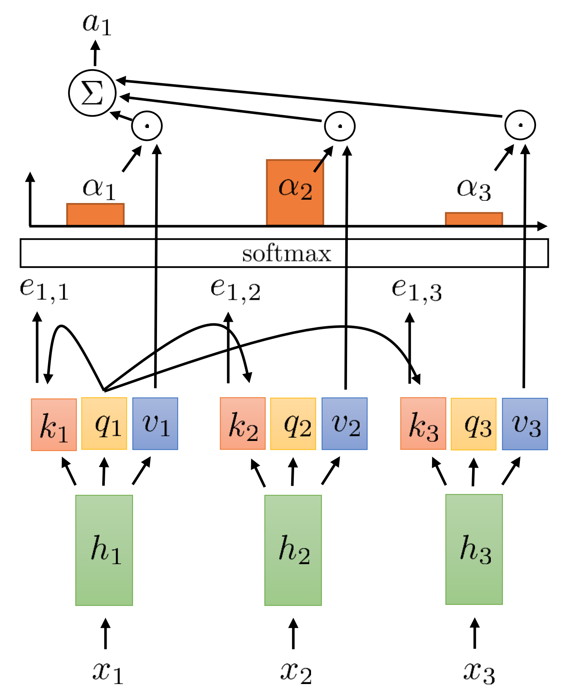

TURBOQUANT:
Online VQ via Random Rotations
Rotate, scalar-quantize, sketch the residual
Albert No · Yonsei University
Information Theory · 2026
Contents
Self-Attention: Query, Key, Value
Each token $s$ projects its hidden state $h_s$ to three vectors:
Query scores past keys; softmax-weighted sum reads past values:

What Is the KV Cache?
Decoder runs token-by-token.
Past keys and values never change — cache them.
At step $t{+}1$: compute only $q_{t+1}, k_{t+1}, v_{t+1}$; reuse the rest.
Cache size: $\;2 \cdot L \cdot H \cdot d \cdot T$ scalars.
70B model @ $T{=}128$K $\;\Rightarrow\;$ $\sim 50$ GB.
KV Cache vs Weight Quantization
Two compression problems, two different bottlenecks.
Weights — Lecture 3
$\sim 10^{10}$ params, fixed
Storage: disk + load-time HBM.
Quantize once, offline, with calibration.
$\Rightarrow$ QUIP / QUIP#.
KV cache — Lecture 4
grows linearly in $T$
Memory: lives in HBM at decode.
Quantize per token, online, no calibration.
$\Rightarrow$ TURBOQUANT.
Compression Constraints
Long context ($32\text{K}, 128\text{K}, 1\text{M}$ tokens) $\Rightarrow$ KV $>$ GPU memory.
- Online — quantize each $K_s, V_s$ as it arrives, no second look.
- Data-oblivious — one codebook, no per-model calibration.
- Attention-preserving — what matters: $\langle q_t, k_s\rangle$, not $\|k - \widetilde k\|$.
Setup and the Rotation Idea
Rotation alone produces a known coordinate distribution
Why Scalar Quantization Fails
- Round each coordinate independently.
- Implicit assumption: energy spread evenly.
- Reality (KV, embeddings): a few outliers dominate.
- Low-bit SQ burns resolution on outliers.
Random Rotation Creates a Known Law
Haar-uniform $\Pi \in \mathbb{R}^{d\times d}$. Any fixed $x \in S^{d-1}$:
Why Gaussian-like. $\Pi$ Haar $\Rightarrow$ $\Pi x$ uniform on the sphere.
Marginal of one coordinate $=$ classical sphere–Gaussian duality (Poincaré's lemma).
Picture: Slicing the Sphere
Fix $Y_1 = t$.
Remaining $d{-}1$ coordinates $\Rightarrow$ a $(d{-}2)$-sphere of radius $\sqrt{1-t^2}$.
Slice volume $\propto (1 - t^2)^{(d-2)/2}$; Jacobian adds one $\sqrt{1-t^2}$:
Mass concentrates near $t = 0$ — coordinates are small.
Lemma — Coordinate of a Sphere Point
Lemma 1.
$Y \sim \mathrm{Unif}(S^{d-1})$. Marginal density of each $Y_j$:
Large $d$: $\;\sqrt{d}\,Y_j \;\Rightarrow\; \mathcal{N}(0, 1)$.
(Picture above gives the slice argument; Gaussian limit derived in the note file.)
Two Metrics, Two Quantizers
MSE distortion
Reconstruct the vector.
Lloyd–Max on $f_d$: scalar codebook for the rotated-coord density.
Inner-product distortion
Reconstruct linear functionals.
QJL random sketch: $1$ bit/coord, unbiased projection.
MSE TURBOQUANT
Target $4^{-b}$ (Gaussian limit), algorithm, anchor, theorem
Target: $\;4^{-b}$ — the Gaussian Limit
What is the best MSE exponent we can hope for at $b$ bits/coordinate?
Lemma 1: each rotated coordinate $\;Y_j \;\dot\sim\; \mathcal{N}(0, 1/d)$.
Gaussian rate$\,$–$\,$distortion under squared error (Lecture 2):
Sum over $d$ coordinates: $\;D_{\mathrm{mse}}(b) \;\asymp\; 4^{-b}$.
Pipeline: Rotate, Quantize, Derotate
- One codebook works for every input — rotation gives the same coordinate law.
- $d\cdot b$ bits total; orthogonal invariance preserves squared error.
Algorithm: TURBOQUANT$_{\mathrm{mse}}$
Public state: rotation $\Pi$, scalar codebook $\{c_1, \ldots, c_K\}$ for $f_d$, $K = 2^b$.
- Encode$(x)$: rotate $y = \Pi \cdot x$.
- For each $j$: $\mathrm{idx}[j] = \arg\min_i |y_j - c_i|$.
- Return $\mathrm{idx}$ $\bigl(d \cdot b$ bits$\bigr)$.
- Decode$(\mathrm{idx})$: $\widetilde y_j = c_{\mathrm{idx}[j]}$, then $\widetilde x = \Pi^\top \widetilde y$.
Codebook offline via Lloyd–Max on $f_d$. No data-dependent training.
One-Bit Anchor: $1 - 2/\pi$
For $Y \sim \mathcal{N}(0, 1/d)$ and sign quantizer $\widehat Y = a \cdot \operatorname{sign}(Y)$:
At the optimum: $\mathbb{E}[(Y - a^\star \cdot \operatorname{sign} Y)^2] = \tfrac{1}{d}(1 - \tfrac{2}{\pi})$.
Theorem: TURBOQUANT$_{\mathrm{mse}}$
Theorem (TURBOQUANT$_{\mathrm{mse}}$).
For every unit $x \in S^{d-1}$:
Matches the Gaussian limit $4^{-b}$ up to a small constant.
Proof: orthogonal invariance + Panter–Dite on $f_d$ (next slide).
Proof — Orthogonal Invariance + Panter–Dite
Step 1. Orthogonal invariance: $\;\|x - \widetilde x\|^2 = \|Y - \widetilde Y\|^2 = d \cdot C(f_d, b).$
Step 2. Panter–Dite, evaluated on $f_d$:
Lower Bound
Sphere SLB + Yao $\;\Rightarrow\;$ exponent $4^{-b}$ unbeatable
Yao + Constant Gap
Lecture 2's converse on $X \sim \mathrm{Unif}(S^{d-1})$ gives $D \ge 4^{-b}$ at $b$ bits/coord.
Yao's principle. Worst-input randomized cost $\ge$ best deterministic cost on the hardest input distribution.
Apply with $\mathrm{Unif}(S^{d-1})$: some $x$ forces $\mathbb{E}\|x - \widehat x\|^2 \ge 4^{-b}$ for every $bd$-bit quantizer.
Inner-Product Bias
Good MSE doesn't imply good linear-functional preservation
One-Bit MSE Shrinks Projections
Sign quantizer $\widetilde Y_j = a \cdot \operatorname{sign}(Y_j)$, $a = \sqrt{2/(\pi d)}$.
Rotational symmetry $\Rightarrow \mathbb{E}[\widetilde x \mid x] = \alpha \cdot x$.
Hence $\mathbb{E}\langle y, \widetilde x\rangle = \tfrac{2}{\pi} \cdot \langle y, x\rangle$ — biased low.
Geometric Reason — Shrunken Norm
$1$-bit reconstruction has constant magnitude per coordinate:
Same direction as $x$, but only $\sqrt{2/\pi} \approx 0.80$ as long.
Every projection shrunk by the same factor $\Rightarrow$ multiplicative bias.
QJL and Inner‑Product TURBOQUANT
One-bit unbiased sketch, applied to the residual
Johnson–Lindenstrauss Lemma
Theorem (JL, 1984).
For any $n$ points $x_1, \ldots, x_n \in \mathbb{R}^d$ and any $\varepsilon \in (0, 1)$, there exists a linear map $A: \mathbb{R}^d \to \mathbb{R}^k$ with $k = \mathcal{O}\!\bigl(\varepsilon^{-2}\log n\bigr)$ such that
A random Gaussian matrix $A = \tfrac{1}{\sqrt k}\,S$ with $S_{ij} \sim \mathcal{N}(0,1)$ works with high probability.
JL Intuition
Fix any unit $u \in \mathbb{R}^d$.
For $s \sim \mathcal{N}(0, I_d)$: $\langle s, u\rangle \sim \mathcal{N}(0, 1)$.
Stack $k$ rows of $S$. Then $\|S u\|^2 \sim \chi^2_k$.
Concentrates around $k$ with relative deviation $\mathcal{O}\!\bigl(1/\sqrt k\bigr)$.
- $k = \Theta(\varepsilon^{-2}\log n)$ $\;\Rightarrow\;$ each of $\binom n2$ pairs survives w.p. $\ge 1 - 1/n^2$.
- Union bound $\Rightarrow$ all pairs simultaneously.
JL Preserves Inner Products Too
From the polarization identity
a distance-preserving sketch is also an inner-product-preserving sketch:
From JL to QJL (1 bit / coord)
Plain JL stores $k$ floats per vector. To compress further, quantize the sketch with one bit per coordinate:
Throws away magnitudes — keeps only the sign pattern of the projection. Strikingly, with the right decoder $Q_{\mathrm{qjl}}^{-1}$, this still gives an unbiased estimator of $\langle y, u\rangle$.
QJL Definition
Let $S \in \mathbb{R}^{d\times d}$ have i.i.d. $\mathcal{N}(0, 1)$ entries. For $u \in S^{d-1}$:
One bit per coordinate. Unbiased estimator of $u$.
Lemma — Unbiased with $1/d$ Variance
Lemma (QJL).
Unbiasedness. Gaussian identity $\mathbb{E}\bigl[s\operatorname{sign}(s^\top u)\bigr] = \sqrt{2/\pi}\,u$ for $s\sim\mathcal{N}(0,I)$.
Variance. Each summand $\le\tfrac{\pi}{2}\|y\|^2$ in second moment; $d$-fold averaging gives $\tfrac{\pi}{2d}\|y\|^2$.
Two-Stage Decomposition
$x = \widetilde x_{\mathrm{mse}} + r$. Estimate each piece separately:
- MSE term ($b{-}1$ bits) — deterministic, biased.
- QJL on $r$ ($1$ bit) — unbiased; variance $\propto \|r\|^2$.
Algorithm: TURBOQUANT$_{\mathrm{prod}}$
- Encode$(x, b)$: $\mathrm{idx} = \mathrm{TQ}_{\mathrm{mse}}(x, b{-}1)$ $\bigl((b{-}1) \cdot d$ bits$\bigr)$.
- $r = x - \mathrm{TQ}_{\mathrm{mse}}^{-1}(\mathrm{idx})$, $\gamma = \|r\|$.
- $q = \operatorname{sign}(S \cdot r) \in \{-1, +1\}^d$ $\bigl(d$ bits$\bigr)$. Return $(\mathrm{idx}, q, \gamma)$.
- Decode: $\widetilde x = \mathrm{TQ}_{\mathrm{mse}}^{-1}(\mathrm{idx}) + \gamma \cdot \tfrac{\sqrt{\pi/2}}{d} \cdot S^\top q$.
Total budget: $b \cdot d$ bits. Stage 1 deterministic; stage 2 random.
Theorem: TURBOQUANT$_{\mathrm{prod}}$
Theorem (TURBOQUANT$_{\mathrm{prod}}$).
Unbiased; variance shrinks as $4^{-b}/d$.
KV Cache Quantization
What's actually quantized, and how
Which Quantizer for $K$ and $V$?
Keys $k_s$
Score is $\langle q, k\rangle$ — preserve inner product.
Values $v_s$
Output is linear in $v$ — preserve inner product.
TURBOQUANT$_{\mathrm{prod}}$ Wraps TURBOQUANT$_{\mathrm{mse}}$
The two quantizers are not run separately — the IP version composes the MSE version.
- Stage 1. $\mathrm{idx} \leftarrow \mathrm{TQ}_{\mathrm{mse}}(x, b{-}1)$. Deterministic, biased.
- Residual. $r \leftarrow x - \mathrm{TQ}_{\mathrm{mse}}^{-1}(\mathrm{idx})$. $\gamma \leftarrow \|r\|$.
- Stage 2. $q \leftarrow \operatorname{sign}(S r)$ (QJL, 1 bit). Unbiased, variance $\propto \gamma^2$.
- Output. $(\mathrm{idx}, q, \gamma)$. $b\cdot d$ bits total.
No separate $Q_{\mathrm{mse}}$ vs $Q_{\mathrm{prod}}$ choice at runtime — one composed call per vector.
Practical Pieces
- Rotation $\Pi \in \mathbb{R}^{d \times d}$ — random Hadamard transform (RHT): $\mathcal{O}(d \log d)$, not $d^2$.
- Scalar codebook $\{c_i\}$ — precomputed offline by Lloyd–Max on $f_d$; shipped once with the model. No calibration.
- Sketch matrix $S$ — deterministic from a PRNG seed; regenerated on the fly, never stored.
- Per-token storage — $(b{-}1)\cdot d$-bit indices, $d$-bit sign vector, scalar $\gamma$. About $b\cdot d$ bits.
Dimensions Used in the Paper
$\Pi \in \mathbb{R}^{d \times d}$ is applied per attention head — $d$ = head dimension, not the full model dim.
KV cache
Llama-3.1-8B-Instruct, Ministral-7B-Instruct.
Head dim $\;d = 128\;$ for Llama-3.1.
Rotation block size $= 128$.
Nearest-neighbor search
GloVe — $d = 200$.
OpenAI3 embeddings — $d = 1536$ and $d = 3072$.
Empirical Behavior
Long-context decoding with TURBOQUANT-quantized KV cache (Llama-3.1-8B-Instruct, head dim $128$):
- $\sim 3.5$ bits/channel — quality matches FP16 within noise.
- $\sim 2.5$ bits/channel — gradual degradation begins.
- Online + data-oblivious — the codebook never sees the user prompt.
Recap
- Rotation: turns any unit vector into a sphere point with known coordinate density $f_d$.
- MSE TURBOQUANT: Lloyd–Max on $f_d$ achieves $D_{\mathrm{mse}}\le\tfrac{\sqrt 3\pi}{2}\cdot 4^{-b}$.
- Lower bound: sphere SLB + Yao $\Rightarrow$ exponent $4^{-b}$ optimal.
- Bias: MSE shrinks projections by $2/\pi$ at one bit.
- QJL: one-bit unbiased linear-functional estimator with $\mathcal{O}(1/d)$ variance.
- IP TURBOQUANT: two-stage; unbiased, $D_{\mathrm{prod}} \le \tfrac{\sqrt 3\pi^2\|y\|^2}{d}\cdot 4^{-b}$.
Next module: diffusion models and the variational bound.